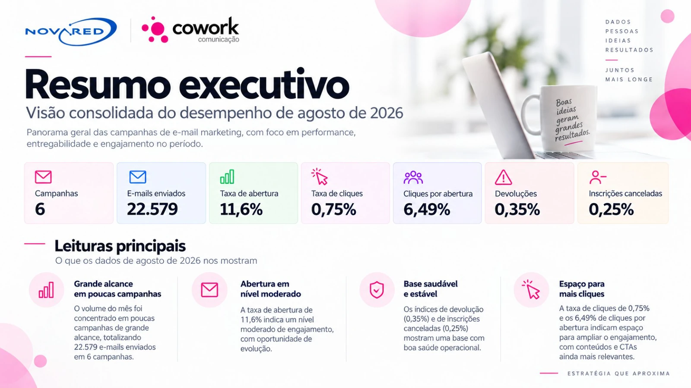
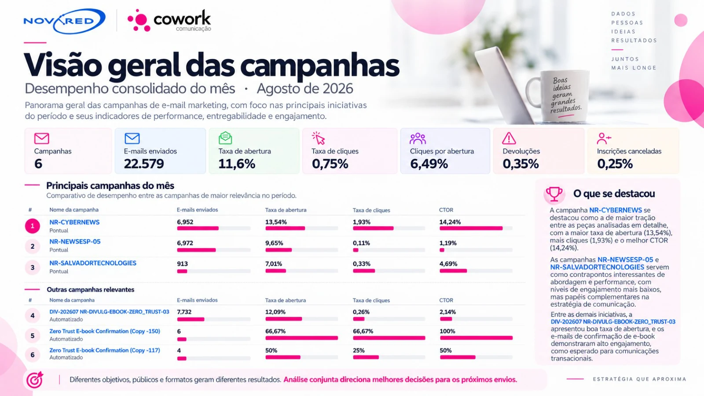
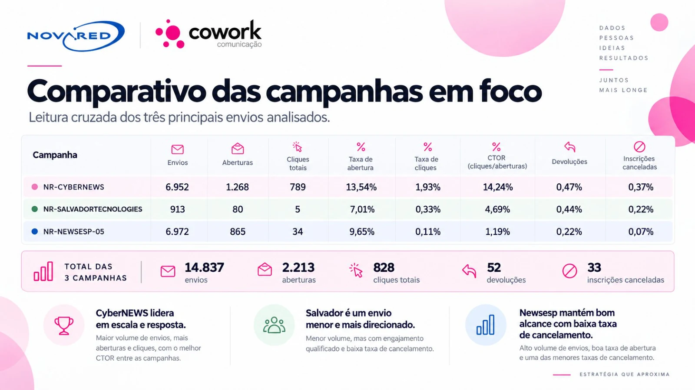
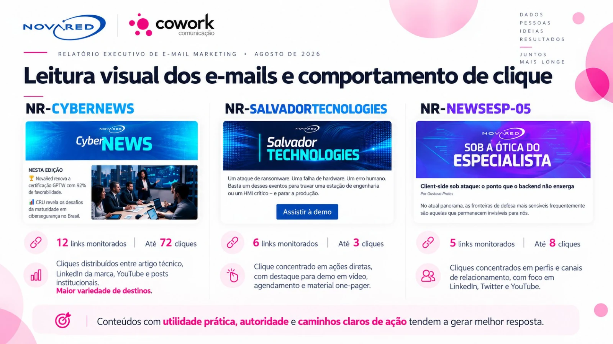
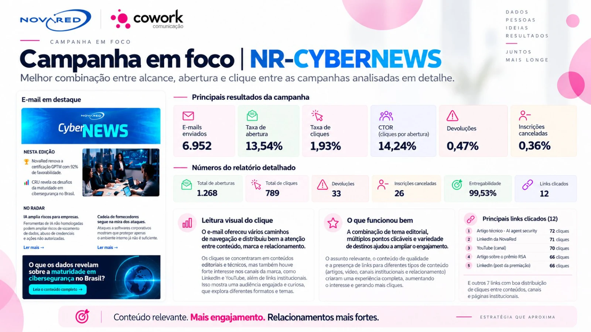
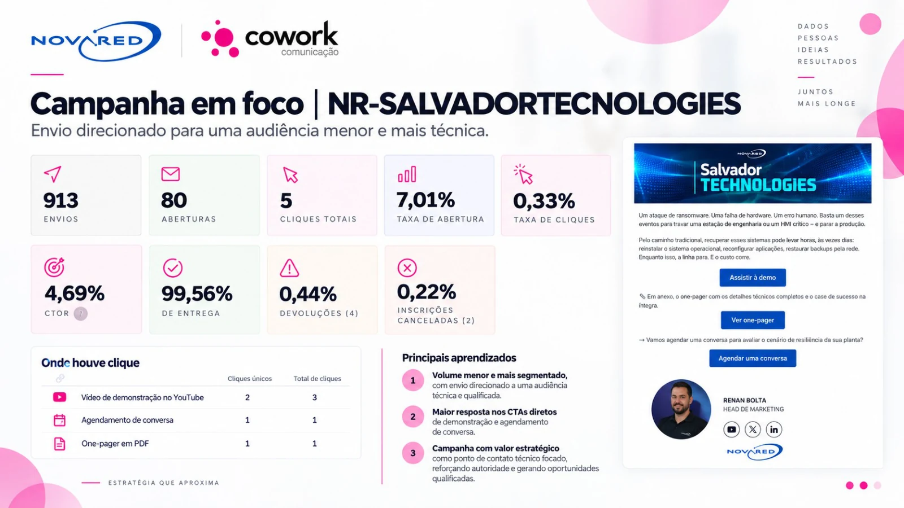
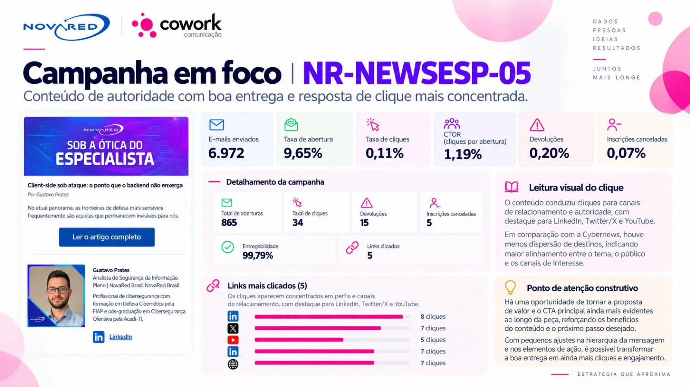
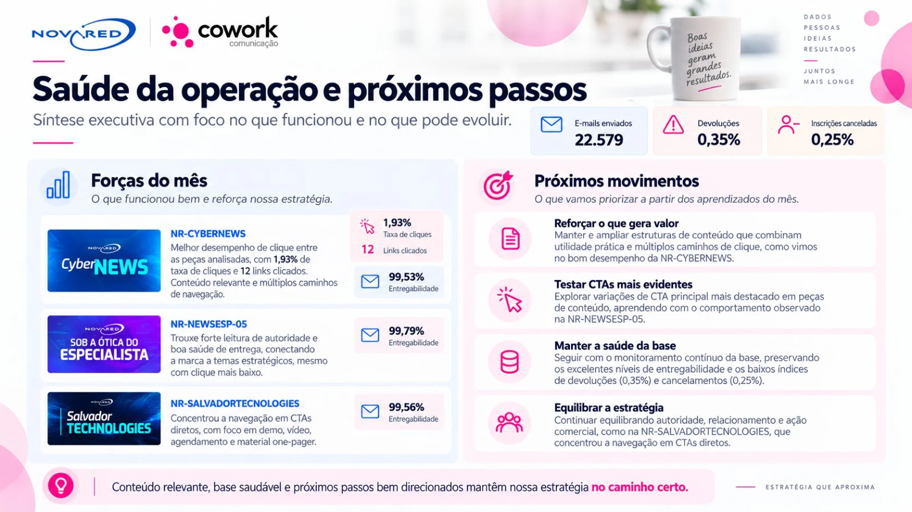

Conteúdo, cliques e decisões.
Análise das campanhas de e-mail marketing para entender a resposta da base e orientar o próximo ciclo de conteúdo.
E-mail marketing em agosto de 2026.
Leitura consolidada de seis campanhas da NovaRed, com comparação de alcance, abertura, cliques e saúde da base. O relatório aprofunda três envios para relacionar as métricas ao conteúdo e aos caminhos de ação oferecidos ao leitor.
Conteúdo relevante precisa de um próximo passo claro.
A CyberNews apresentou a maior taxa de cliques entre as três campanhas em foco. A leitura dos mapas de clique orienta testes de CTA, maior clareza na chamada e manutenção da saúde da base.
Os números deste case se referem a agosto de 2026. O aprofundamento visual considera NR-CYBERNEWS, NR-SALVADORTECNOLOGIES e NR-NEWSESP-05.
As páginas completas da análise.

Ver as outras 7 páginas






